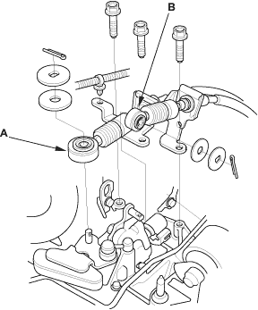
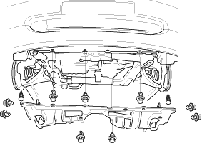
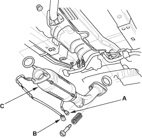

- Remove the shift cable (A) and select cable (B).

- If the A/C compressor is equipped, remove the drive belt (see page 4-25).
- Remove the radiator cap.
- Raise the hoist to full height.
- Remove the front tyres/wheels.
- Remove the splash shield.


- Loosen the drain plug in the radiator to drain the engine coolant (see page 10-6).
- Drain the transmission fluid (see page 13-4).
- Drain the engine oil (see page 8-5).
- Disconnect the primary Heated Oxygen Sensor (primary HO2S) connector (A) and secondary Heated Oxygen Sensor (secondary HO2S) connector (B).

- Remove the Three Way Catalytic Converter (TWC) assembly (C).
- Disconnect the stabiliser links (see step 9 on page 18-5) and suspension lower arm ball joints (see step 10 on page 18-5).
- Remove the driveshafts (see page 16-3). Coat all precision finished surfaces with clean engine oil. Tie plastic bags over the driveshaft ends.